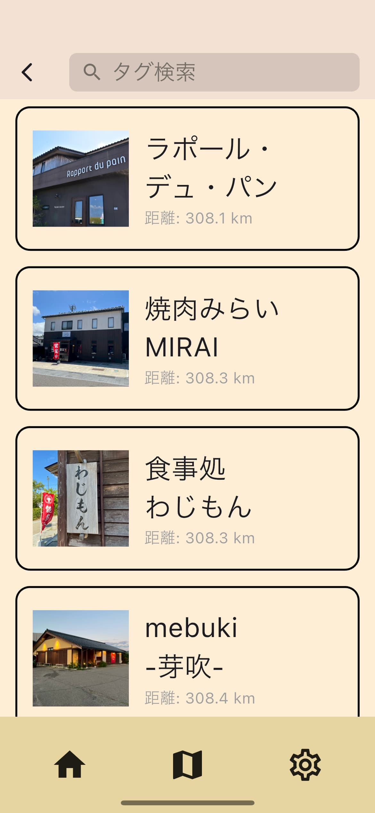
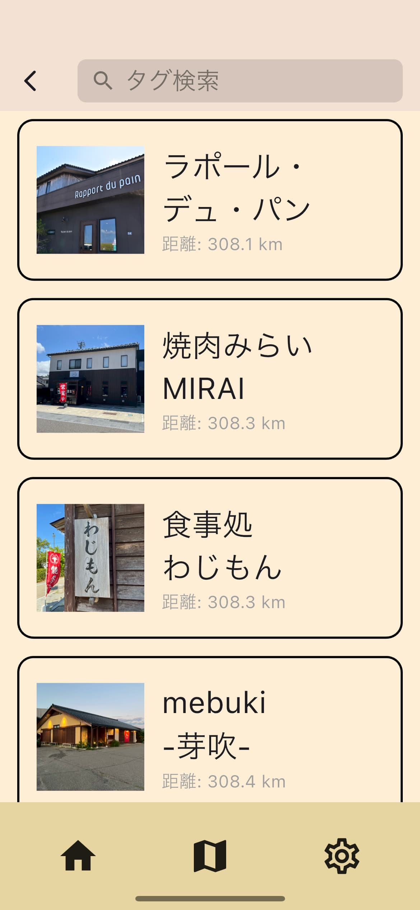

活動報告
能登観光アプリ「めぐり」をリリースしました。
能登半島の復興を目的とした観光用スマートフォンアプリ「めぐり」をリリースしました。
こちらのリンクよりダウンロードできます。
iOS (App Store), Android (Google Play)
さらに、「めぐり」の特設Webサイトもオープンしました。アプリの機能やアプリ名の由来、メッセージなどはこちらからご覧ください。
めぐり 特設Webサイト


 

完成のご報告と今後の展望
まず初めに、これまで多くのご支援・ご協力をくださった皆さまに、心より感謝申し上げます。
私たちだけの力では決して成し得なかったことであり、関わってくださったすべての方々のおかげで、この日を迎えることができました。
このアプリが、少しでも能登の復興や地域の活性化に貢献できることを願っております。
しかし、今回完成したのは輪島市エリアのみです。
私たちは今後、能登全域の情報を掲載することを目指し、さらなる機能改善にも取り組んでいきます。
現段階では、アプリをご利用いただく中で「使いづらい」「もっとこうしてほしい」と感じる点があるかもしれません。
その際は、ぜひ皆さまのご意見・ご要望をお聞かせください。
皆さまのお声を反映させながら、より良いアプリに育てていきたいと考えています。
また、掲載されていない飲食店もまだ多くあります。
私たちは現在、5人のメンバーで一店舗ずつ現地を訪問しながら取材・掲載を進めています。
そのため、反映までにお時間をいただく場合がございますが、どうかご理解いただけますと幸いです。
今後も、能登の魅力を多くの方々に伝えるために、誠実に活動を続けてまいります。